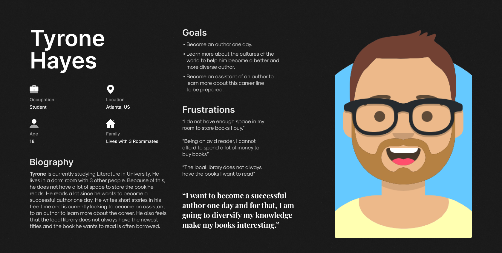

BookNest- EBook Borrowing Application Design
BookNest is a mobile application that allows users to borrow E-Books for a definitive period of time. A WishList function enables the users to add books they would like to read that are not available yet but when the book becomes available, will be notified via an E-Mail. The main goal of this application is to enable readers who do not have a lot of money to spare for books but would still like to read the titles they are interested in without any hassle. It is also a lot more convenient for users to read books from the comfort of their home rather than travel to a local library.
Defining the Users of the Application and it's Scope
The main question is why would anyone use this application? Many Paperback Books and E-Books are relatively cheap nowadays and many consider books an investment since they do not perish. According to a study from the Pew Research Center on American reading habits, the number of books an average person reads a year is 12, although this number is inflated due to the number of avid readers who drive up the average.
Let us consider an example of a very famous book. The Design of Everyday Things by Don Norman. This book costs $12.99 for Kindle and $14.18 for the Paperback version on Amazon. For someone who is working a full time job, this book is very inexpensive. But for a student who is on a budget, this might seem kind of expensive especially when they do not plan on re-reading it anytime soon because of their tight schedule. And what if the student we are talking about is an avid reader? The goal of this application is just to give users an opportunity to read books without actually having to buy it.
Meet the users of BookNest
Based on the previous section, I have illustrated 2 prospective user personas for BookNest.


Moodboard
Before I get to designing the application, I wanted to settle on the direction of the design of the application. I created this MoodBoard to include certain style information such as the general colour scheme and font. I chose a Blue Colour scheme because the colour blue is proven to increase productivity as well as lower pulse rate, to ensure a great reading experience for the users. Although, overuse of the colour blue could decrease your appetite or worse, create a feeling of sadness which I definitely wanted to avoid.
Illustrating the User Journey of Tyrone Hayes
To get a better understanding about how the users would traverse through the application, I have created a user journey of how Tyrone Hayes would navigate through the application and accomplish his goal of borrowing a book to read.
Important Details to keep in mind before designing the Wireframes
Creating a Hypothesis Statement based on the User Persona of Tyrone Hayes
If Tyrone downloads the app, he will have achieved his aim of finding an alternative way of reading books and arguably, a more reliable way than the local library. He will also be able to resolve his space issues in his dorm room and also, will not have to spend any money to read the books. We believe that easy access to the books will increase how frequently he uses the application which will most certainly be helpful for him to achieve his goal for becoming a successful author one day.
User Storyboards
Before I create the wireframes of the application, I have created a storyboard to visualise how Tyrone would navigate the application in order to borrow a book. I created this storyboard to visualise the organisation of screens in the wireframing phase.

Wireframes
I have created a low-fidelity prototype for the application. For this Low-Fidelity Prototype, I focused on the main user journey of the application which covers creating an account, checking "Your Library" which stores all the books you have rented and bought, using the search function to look for a book you want to read, then reading the description of the book and then renting it and finally, see it be added to "Your Library". This will be the most used functionality in the application hence, I wanted to prototype this first to see how smooth the user journey I created would be.
UX Research Study Script
To gain a better understanding about how the users feel about BookNest's application and its main functionality of enabling users to borrow books for free, I have created a UX Research Script. The script contains information about the desired participant groups, the tasks that the users will have to do on BookNest's application, the follow-up questions that will be asked regarding the tasks. After the users complete this task, we will get a much better idea about what features are easy to use, what features need to improve and more importantly, how to improve the features that the users have faced issues with.